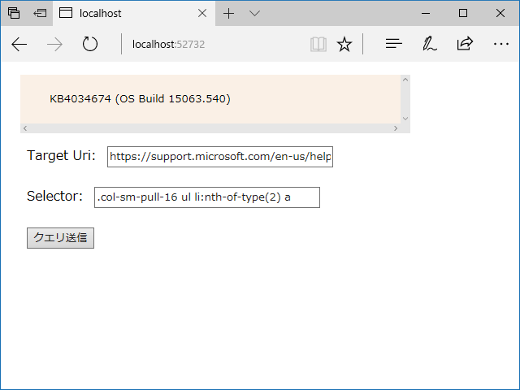
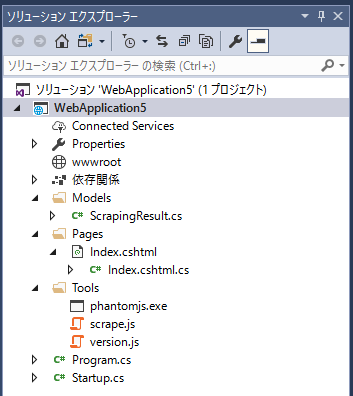

Razor Pages：PhantomJS で動的サイトをスクレイピングする
公開日：

（Windows 10 version 1703 の最新ビルドの番号をテキトーに得るサンプル）
静的サイトのスクレイピングは HTML をダウンロードしてごちゃごちゃっとやればいいけど、動的サイトの場合はブラウザーで JavaScript の評価をしたあとの HTML（DOM ツリーっていうの？）がほしい。というわけで、ヘッドレスブラウザー「PhantomJS」でアクセス → 評価するサンプルを Razor Pages で作ってみた。
ソリューションはこんな構成になった。

ASP.NET Core＋Razor Pagesの導入方法は以下のページを参照のこと（別にこの通りにやる必要はないけど）。
基本的な流れ
PhantomJS.exe にスクリプトと Uri とセレクターを渡し、標準出力を介して結果（JSON）を得る。標準出力には PhantomJS が吐くエラーが混じることがあるので、適当な正規表現で除去しておく。
Index.cshtml
コードビハインド？ MVVM じゃない方の ViewModel？ なんて言っていいのかは知らんけど（変な言葉遣いしたらその手のケーサツが来そうだし）、Index.cshtml の裏はこんな感じ。
// index.cshtml.csusing System; using System.Collections.Generic; using System.Linq; using System.Threading.Tasks; using Microsoft.AspNetCore.Mvc; using Microsoft.AspNetCore.Mvc.RazorPages; using System.Diagnostics; using System.IO;
namespace WebApplication5.Pages { public class IndexModel : PageModel { [BindProperty] public Uri Target { get; set; }
[BindProperty] public string Selector { get; set; }
[BindProperty] public Models.ScrapingResult Result { get; private set; }
public IActionResult OnPost(string message) { if (!ModelState.IsValid) return Page();
var root_dir = Hosting.Environment.ContentRootPath; var work_dir = System.IO.Path.Combine(root_dir, "Tools"); var script_name = "scrape.js";
var info = new ProcessStartInfo() { Arguments = $@"""{script_name}"" ""{Target}"" ""{Selector}""", FileName = Path.Combine(work_dir, "phantomjs.exe"), CreateNoWindow = true, RedirectStandardOutput = true, StandardOutputEncoding = System.Text.Encoding.UTF8, UseShellExecute = false, WorkingDirectory = work_dir, };
using (var process = new Process() { StartInfo = info, }) { var output = string.Empty;
process.OutputDataReceived += (s, a) => { output += a.Data; Debug.WriteLine(a.Data); };
process.Start(); process.BeginOutputReadLine(); process.WaitForExit();
// エラー出力をちょん切る var r = new System.Text.RegularExpressions.Regex("{.+}"); output = r.Match(output).Value;
Result = Newtonsoft.Json.JsonConvert.DeserializeObject<Models.ScrapingResult>(output); }
return Page(); } } }
ユーザーインターフェイス（Index.cshtml）はこんな感じ。まだ慣れてないのでこれいいのかよくわかんないけど、タグヘルパーってやつでバインディングできるんだなー。便利ンゴ。
// Index.cshtml @page @model WebApplication5.Pages.IndexModel @addTagHelper *, Microsoft.AspNetCore.Mvc.TagHelpers <html> <body> <style> *, input { font-family: Meiryo; margin: 8px; } pre { background-color: linen; width: 480px; overflow: scroll; } </style> <pre><code> @Model.Result?.Text </code></pre> <div asp-validation-summary="All"></div> <form method="POST"> <div>Target Uri: <input asp-for="Target" /></div> <div>Selector: <input asp-for="Selector" /></div> <input type="submit" /> </form> </body> </html>
モデル
スクレイピングの結果を表すモデル（？）クラスはこんな感じ。スクリプトが返す JSON の形式が固まるまでは dynamic にしちゃうと楽だね。
using Newtonsoft.Json; using System; using System.Collections.Generic; using System.Linq; using System.Threading.Tasks;namespace WebApplication5.Models {
public class ScrapingResult { [JsonProperty("uri")] public string Url { get; set; }
//[JsonProperty("selector")] public string Selector { get; set; }
public string Status { get; set; }
public string Text { get; set; } } }
[JsonProperty(“uri”)] は要らんのか？ コメントアウトしても動いたから、命名規約ベースでよしなにしてくれるのかもしれない。
PhantomJS スクリプト
PhantomJS に渡したスクリプトの中身はこんな感じ。
var page = require('webpage').create(); var system = require('system'); var url = system.args[1]; var selector = system.args[2];page.open(url, function (status) { var text = null; if (status === 'success') { text = page.evaluate(function (selector) { var element = document.body.querySelector(selector); if (element == null) return null; return element.innerHTML; }, selector); } console.log(JSON.stringify({ url: url, selector: selector, status: status, text: text, })); phantom.exit(); });
ちょっと悩んだのは page.evaluate() がサンドボックスになっていたこと。プリミティブ型じゃないとやり取りできないのかな。page.evaluate() に変数を渡す方法も悩んだけど、だいたいこれでイケそう*1。
ほんとは引数チェックしたり、エラートラップして終了コードを渡したりした方がいいよね。まぁ、サンプルなのでいろいろ適当でいい気がする。
で、ここまで完成させたあとに昔ブックマークしたページのことを思い出した。
JavaScript の評価もできるなら、こっちを使った方がよかったかもしれない。
*1:JavaScript のスコープとか、基本があんまりわかってないのですごく悩んだ